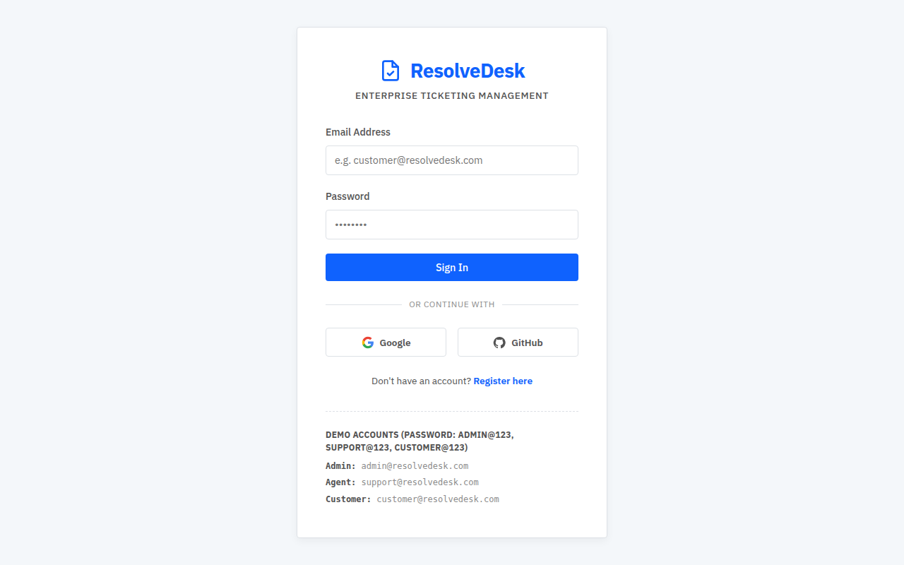
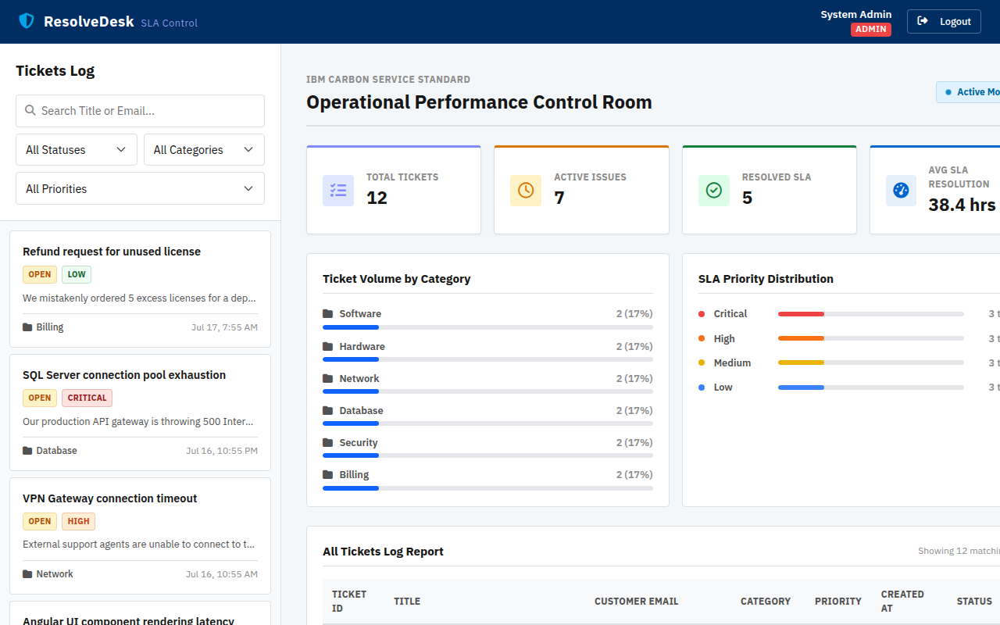
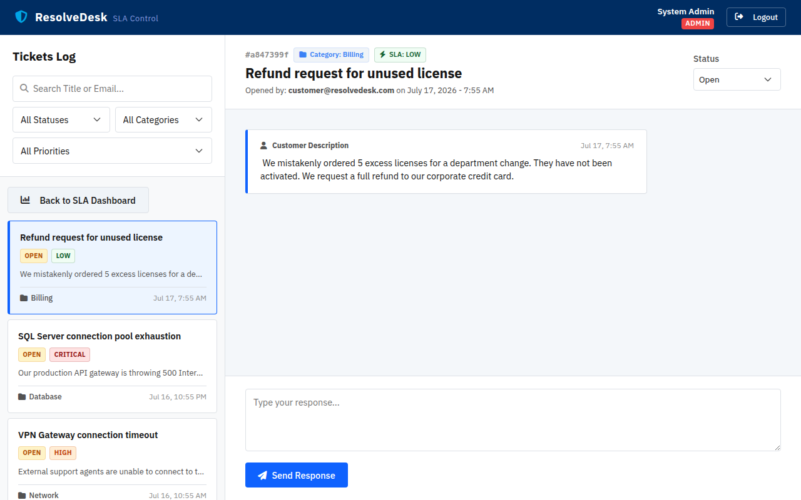
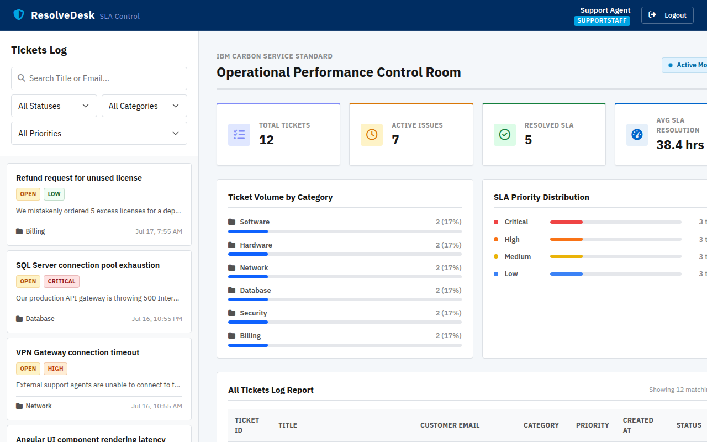
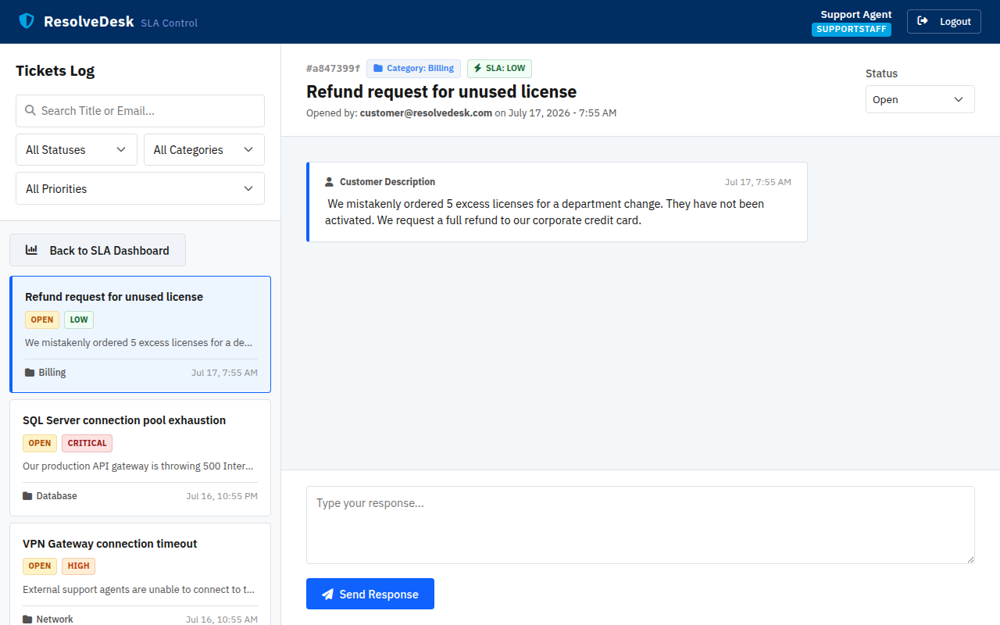
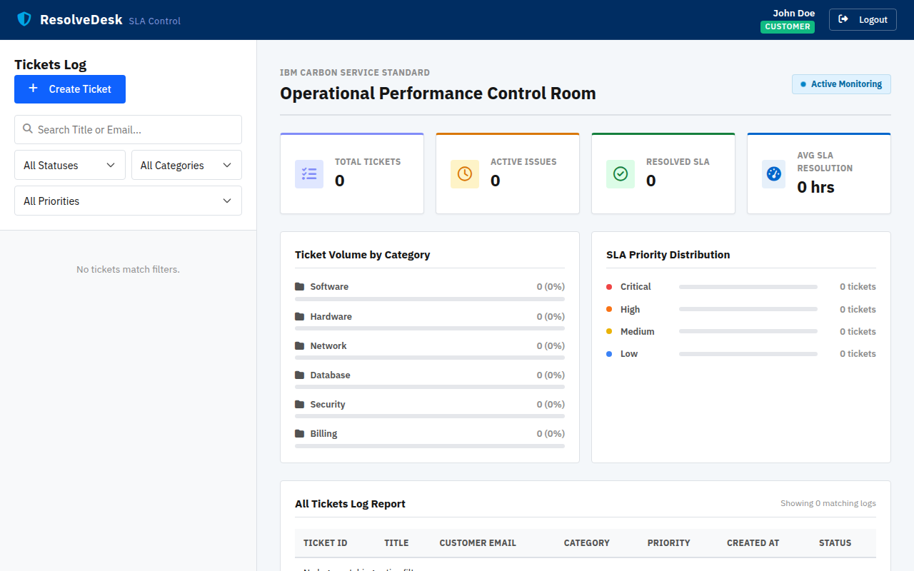
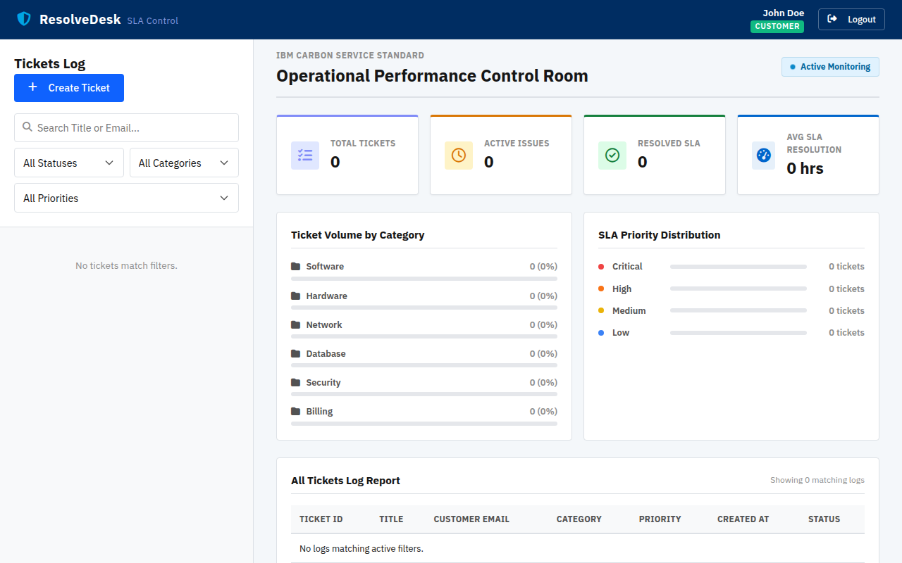
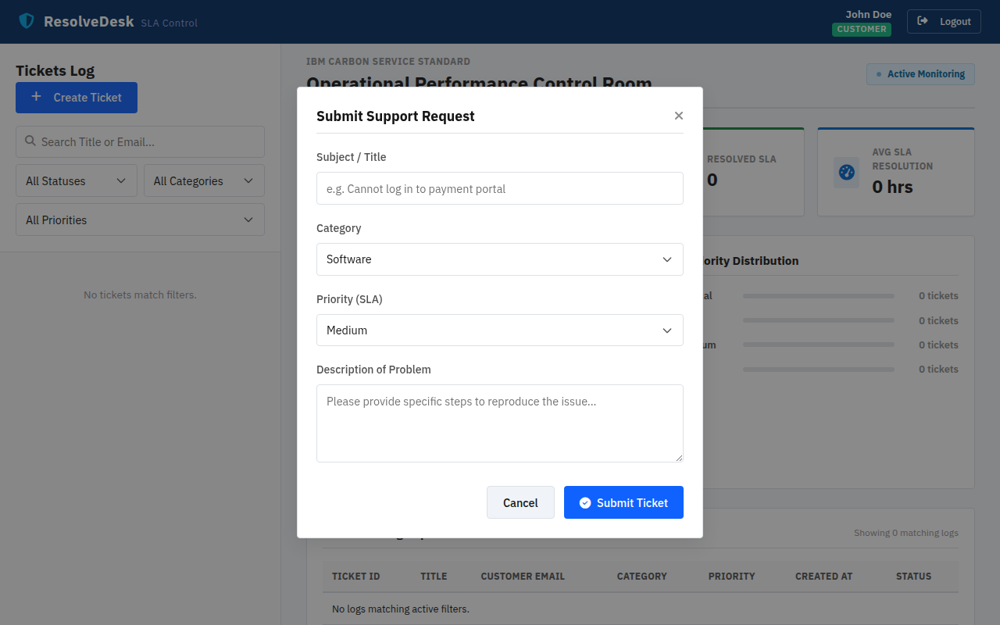

1. Login Page
The login screen is the entry point to the application. It supports email/password authentication and simulated OAuth (Google, GitHub).

Login Screen — Default State
Rendered by LoginComponent at route /login. Features a branded card with email/password fields, OAuth buttons, and demo credential hints.
src/ResolveDesk.UI/src/app/components/login/login.component.tsTemplate:
login.component.html | Styles: login.component.css
How It Works (Code)
// login.component.ts — Form submission handler onSubmit() { this.isLoading = true; this.authService.login(this.email, this.password).subscribe({ next: (res) => { this.router.navigate(['/dashboard']); }, error: (err) => { this.errorMessage = err.error?.error || 'Authentication failed.'; } }); }
// auth.service.ts — Posts to Gateway, stores JWT in localStorage login(email: string, password: string): Observable<any> { return this.http.post<any>(`${this.apiUrl}/login`, { email, password }).pipe( tap(res => { localStorage.setItem('resolvedesk_user', JSON.stringify(user)); this.currentUser.set(user); // Angular Signal update }) ); }
currentUser property is an Angular 17 Signal (signal<User | null>), providing automatic change detection without Zone.js overhead. The JWT token stored in localStorage is automatically attached to every subsequent API call by auth.interceptor.ts.2. Admin Dashboard
The Administrator sees all tickets across the entire system, with full control to change statuses, reply, and manage the ticketing lifecycle.

Admin Dashboard — Full Ticket Overview
Shows KPI stats (Total, Open, In Progress, Closed), category/priority distribution bars, search/filter controls, and the complete ticket table. The isAdminOrSupport() check returns true, displaying status change dropdowns and the full ticket list.

Admin — Ticket Detail & Response Thread
Clicking a ticket row reveals the detail panel with the full conversation thread, status change dropdown (Open → InProgress → Closed), and a reply input field. The status dropdown is only visible to Admin/Support roles.
src/ResolveDesk.UI/src/app/components/dashboard/dashboard.component.tsTemplate:
dashboard.component.html | Styles: dashboard.component.css
Role-Based Visibility (Code)
// dashboard.component.ts — Role check for admin/support features isAdminOrSupport(): boolean { if (!this.currentUser) return false; return this.currentUser.role === 'Admin' || this.currentUser.role === 'SupportStaff'; } // Used in template: *ngIf="isAdminOrSupport()" to show/hide status dropdown
// dashboard.component.ts — Stats calculation using Angular Signals pattern calculateStats() { this.totalTicketsCount = this.tickets.length; this.openTicketsCount = this.tickets.filter(t => t.status === 'Open').length; // Average resolution time for SLA metrics const closedTickets = this.tickets.filter(t => t.status === 'Closed' && t.resolvedAt); const totalHours = closedTickets.reduce((sum, t) => { return sum + (resolved - created) / (1000 * 60 * 60); }, 0); this.averageResolutionHours = Math.round(totalHours / closedTickets.length); }
3. Support Agent Dashboard
The Support Agent has the same full view as Admin — can see all tickets, change statuses, and reply. The key difference is organizational: Admins manage the system while Agents handle day-to-day resolution.

Support Agent Dashboard
Identical layout to Admin. The isAdminOrSupport() check applies to both roles, granting full ticket visibility and status management capabilities.

Support Agent — Ticket Detail & Reply
When a support agent replies to an "Open" ticket, the backend automatically transitions the status to "InProgress" and publishes a TicketStatusChangedEvent via MassTransit.
TicketsController.CreateResponse(), if the responder is Admin/Support and the ticket is "Open", the status is automatically set to "InProgress". This is a business rule enforced server-side, not client-side.4. Customer Dashboard
Customers see only their own tickets. They can create new tickets, reply to existing ones, but cannot change ticket status.

Customer Dashboard — Filtered View
The ticket list is filtered server-side: the backend only returns tickets where CustomerId == userId. KPI stats reflect only the customer's own tickets.

Customer — Ticket Detail (No Status Dropdown)
The status dropdown is hidden because isAdminOrSupport() returns false. Customer can only view the conversation and add replies.

Create Ticket Modal
The customer clicks "New Ticket" to open a modal with Title, Description, Category (Software/Hardware/Network/etc.), and Priority (Critical/High/Medium/Low) fields.
Server-Side Ticket Filtering (Code)
// TicketsController.cs — Only returns customer's own tickets if not admin/support [HttpGet] public async Task<ActionResult> GetTickets() { IQueryable<Ticket> query = _context.Tickets.Include(t => t.Responses); if (!IsAdminOrSupport()) { query = query.Where(t => t.CustomerId == userId); // Filter by JWT claim } var tickets = await query.OrderByDescending(t => t.CreatedAt).ToListAsync(); return Ok(tickets.Select(MapToTicketDto)); }
// dashboard.component.ts — Create ticket handler onCreateTicket() { this.ticketService.createTicket( this.newTicketTitle, this.newTicketDescription, this.newTicketCategory, // e.g. 'Software', 'Hardware' this.newTicketPriority // e.g. 'Critical', 'Medium' ).subscribe({ next: () => { this.showCreateModal = false; this.loadTickets(); // Refresh ticket list } }); }